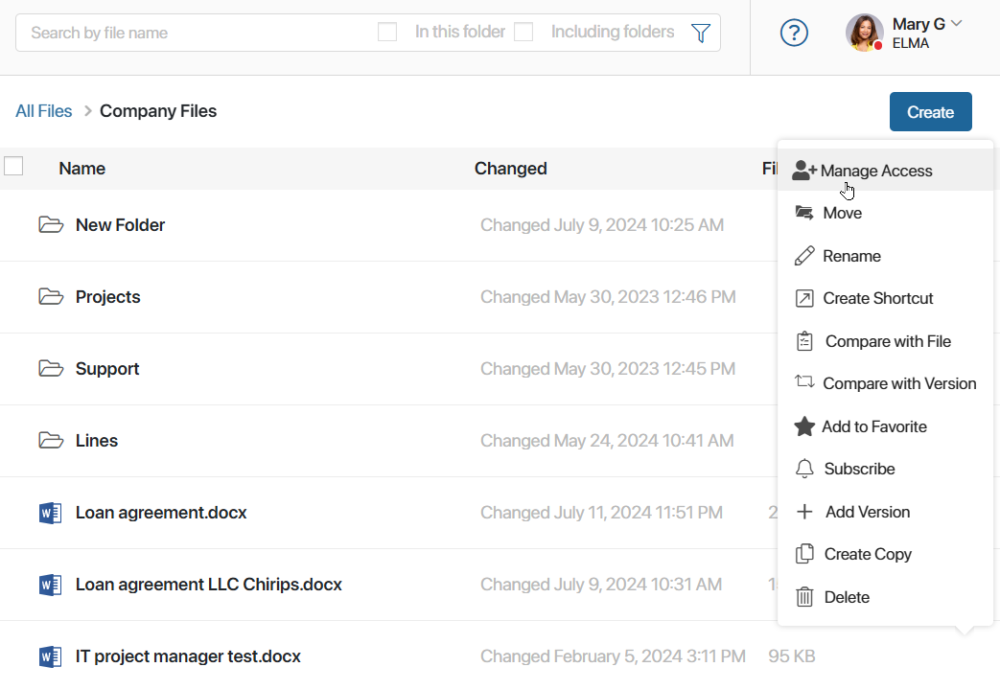
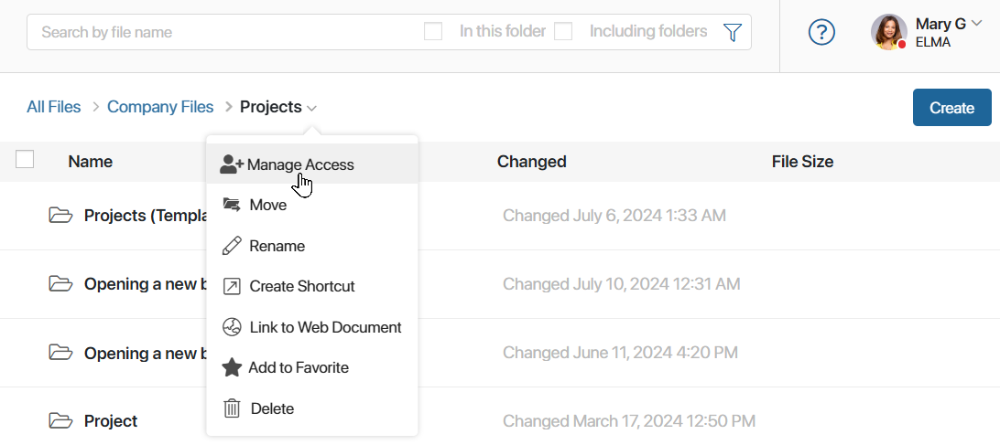
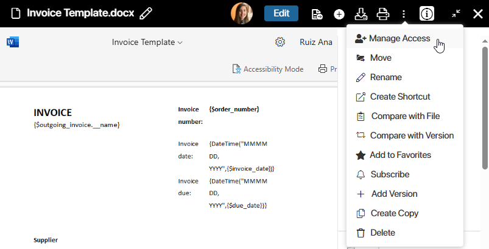
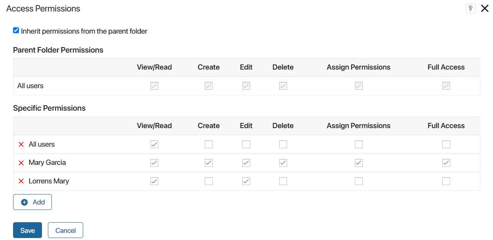
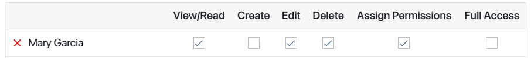

Any organization has its hierarchy of authority that describes the responsibilities and privileges of employees. Each employee has a specific role in the company and a level of access to information.
In BRIX you can specify who is allowed to view, edit, or delete files and folders, as well as change their access settings.
How to manage access
Access settings can be changed by:
- System administrators.
- Users who created the file or folder.
- Employees with access to assign permissions.
You can go to access control in several ways:
1. From the list of folders and files.
In the Files workspace, next to the desired object, click the three dots icon and select Manage Access.

2. From the breadcrumbs of a folder.
In the folder list, click the arrow icon next to the folder name in the breadcrumbs, and then select Manage Access.

3. From the file view page.
Open the file in viewing mode, click the three dots icon in the upper right corner of the page, and select Manage Access.

The opened window is divided into two parts: Parent Folder Permissions and Specific Permissions.

- Parent folder permissions.
By default, all new files and folders inherit the permissions of the parent folder. They are displayed in the upper part of the window and cannot be edited, but you can deselect the option of inheriting parent permissions.
- Specific permissions.
Here you can give access to a folder or document to someone else, except for the employees listed above. To do this, click on the + Add button. In the window that opens, select a user, a group of employees, or an item of the organizational chart.
After selecting an object, specify the access permissions and click Save.
Types of access permissions
Access permissions define actions that you and your colleagues can perform with a file or folder:

- View/Read. The user is allowed to view the file or folder, as well as download file versions to the computer.
- Create. The user is allowed to create files in the current folder. This option is available only for folders.
- Edit. The user is allowed to make changes to the file contents, add versions, rename and move folders or files, and create links as well as retrieve the approval sheets from the archives.
- Delete. The user is allowed to move the file to the recycle bin or to delete an empty folder.
- Assign Permissions. The user is allowed to grant and restrict access rights to a file or folder, as well as grant permissions to view the file when the user is mentioned in the associated activity stream.
- Full Access. All the above actions are allowed.
Please note that there are no process management, export and import permissions among the available ones because they don’t need to be configured.
начало внимание
By default, the following people have full access to the file or folder:
- Users included in the Administrators group.
- Users who created the file or folder.
- Manager of the user who created the folder or file (according to the organizational chart).
конец внимание
Access to files in the app item activity stream
You can attach a file to an app item activity stream. To do that drag the file from a folder on your computer to the comment box or click the paper clip icon below it. The file will only be available for preview and downloading to those users who have access permissions for the app item. To learn more, see Restrict access to specific app items.
Found a typo? Select it and press Ctrl+Enter to send us feedback